6. Standard Asset 2D dan Instant Development
Pendahuluan
Pada praktikum ke-7 ini, kita akan mencoba membuat project baru dengan memanfaatkan fitur standard asset yang disedikan oleh unity. Unity menyediakan beberapa asset game yang sudah jadi. Hanya dengan mengambil dari prefab ke scene view maka semua fungsional dari game object tersebut sudah ada. Hal ini tentunya sangat menguntungkan bagi para developer yang memiliki sedikit pengetahuan pemrograman.
Standard Asset 2D dan Instant Development
Untuk membangun aplikasi Game, unity menyediakan asset standar yang dapat digunakan daripada harus membuat asset secara manual dari awal hingga akhir. Jika standar asset belum di install berikut adalah cara download dan instalasinya:
Download standard asset installer di: https://unity3d.com/get-unity/download/archive. Sesuaikan versi Unity yang terinstal dengan versi standard asset seperti gambar berikut:
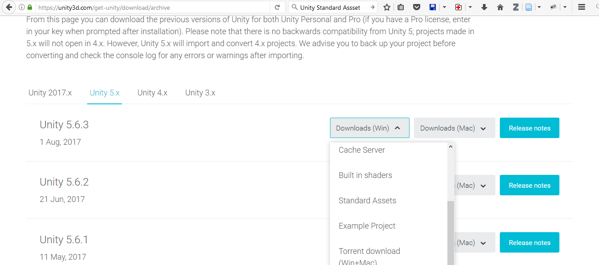Setelah itu Download(Win) jika OS yang digunakan Windows atau Download(Mac) jika OS computer yang digunakan Mac.
Install file standar asset yang sudah didownload. (pastikan editor unity belum dibuka)
Pada praktikum ini, kita akan membuat project baru 2D dengan nama “SecondGame”. Tambahkan standard asset dengan cara masuk ke menu bar. Setelah itu, masuk ke Assets-> Import Package -> 2D kemudian akan muncul bar seperti berikut:
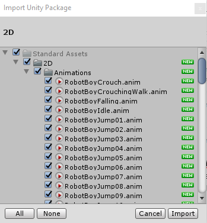
Klik tombol “Import” dan tunggu beberapa saat. Simpan scene dengan nama “Main”. Pada project window, double klik folder “Standard Assets” dan masuk pada folder 2D->Prefabs. Disana terdapat beberapa game object prefab yang sudah jadi.
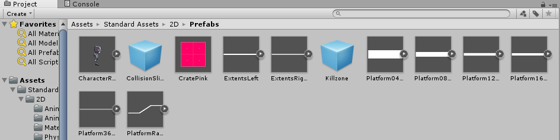
Tarik object Platform04x01 ke scene view. Atur scale x bernilai 100 dan jadikan object tersebut sebagai pijakan Player. Tarik object CharacterRobotBoy ke scene view dan letakkan diatas Platform04x01, sehingga akan tampak seperti gambar berikut:
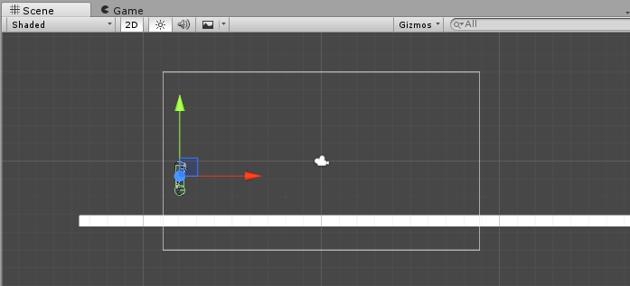
Jalankan Unity dan lihat apa yang terjadi. Gerakkan karakter CharacterRobotBoy ke kanan dan kekiri dengan panah kanan atau kiri di keyboar. Gunakan spasi untuk lompat dan ctrl untuk merangkak.
Finite State Machine untuk Game
Finite State Machine atau disingkat FSM merupakan sebuah model yang merepresentasikan suatu alur kendali dari keadaan yang ada. Setiap keadaan state pada FSM bisa jadi merupakan sebuah tingkah laku. Beberapa manfaat FSM pada game yaitu: untuk memodelkan perilaku karakter game, memodelkan reward game, memodelkan alur menu game, dll.
Pertanyaannya adalah apa saja komponen dari FSM? Jawabannya adalah suatu state, transition, dan event. State merupakan suatu keadaan dan disimbolkan dengan lingkaran. Transisi merupakan perpindahan antar state satu dengan yang lain dan disimbolkan dengan panah. Event merupakan suatu syarat terjadinya perpindahan yang dilihat diatas garis transisi. Berikut adalah model FSM yang digunakan untuk memodelkan mental karakter player pada suatu game:
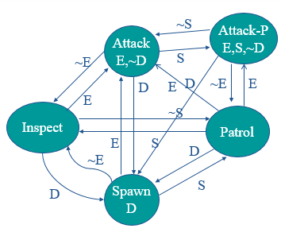
Keterangan - States: Attack, Attack-P, Inspect, Patrol, Spawn
- Events: * E: Saat player melihat musuh * S: Saat player mendengar suara * D: Saat player mati
Kita dapat melihat FSM dari karakter RobotBoy di Unity dengan cara:
PRAKTIKUM:
Klik pada object CharacterRobotBoy
Lihat menu bar dan akses Window->Animator, dan letakkan seperti ini:
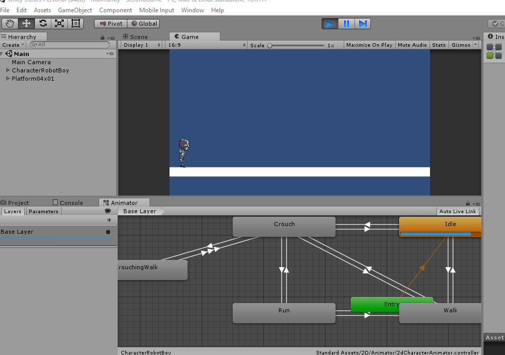
Klik scroll pada mouse untuk navigasi didalam animator view.Jalankan Unity,
Jika sudah dijalankan seharusnya layar animator akan berubah seperti ini (di state Idle menyala):
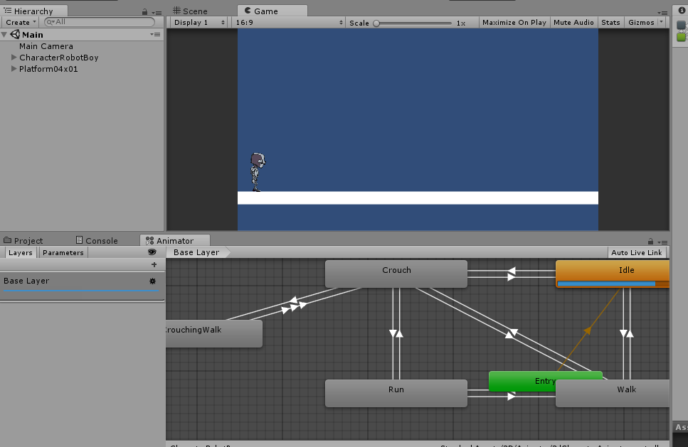Klik di state “Idle” pada Animator view dan lihat pada Inspector.
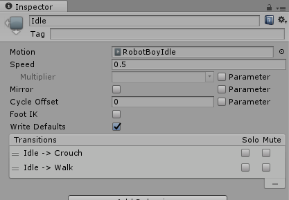Disana terdapat keterangan transisi dari “Idle” ke “Crounch” atau ke “Walk”
Jalankan player Robotboy atau lakukan merangkak pada karakter player tersebut.
Amati setiap kejadian yang terjadi di Animator.
KUMPULKAN:
File <nim>.txt dan Jawab pertanyaan berikut dengan bisa dan tidak.
- Apakah bisa state karakter player dari Idle langsung ke Run?
- Apakah bisa state karakter player dari Jump ke Crunch?
- Apakah state Crounch dan CrouchchingWalk memiliki kesamaan transisi?
Contoh jawaban didalam .txt file:
File : A11200904997.txt
- Tidak
- Tidak
- Tidak
Membuat FSM Sendiri
Kita akan membuat FSM sederhana untuk NPC (Non-Playable Character). Pembuatan FSM di Unity tidaklah sulit melainkan terdapat bantuan interface sehingga tidak perlu untuk membuat kode program FSM secara keseluruhan. Jika diketahui sebuah NPC dengan dua state yaitu dead dan idle. State akan dimulai dengan NPC dead. Terdapat satu event untuk mengaktifkan yaitu saat NPC didekati oleh player maka NPC akan berpindah state (transisi) dari dead ke idle. Begitu saat NPC dijauhi oleh player maka akan kembali ke state dead.
PRAKTIKUM:
Buat game object kosong, rename menjadi “NPC” dan letakan di posisi transformasi x=0,y=0, dan z=0.
Tambahkan komponen Animator pada Inspector “NPC”.
Klik “NPC” pada hierarcy window, close Animator tab view jika sudah terbuka, kemudian ke menu tab, buka kembali animator view (Window->Animator)
Tarik asset game folder “female” yang berisi banyak gambar sprite NPC kedalam project window.
Masuk pada folder female dan cari dead (1) sampai dead (12), lakukan shift click untuk memilih dead (1) sampai dead (12).
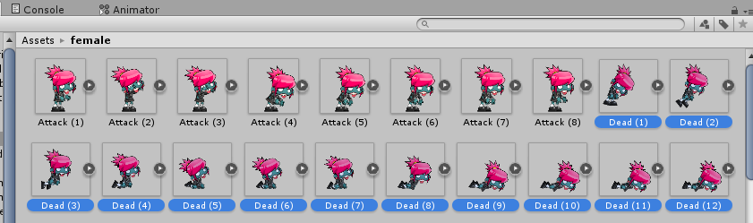Tarik langsung ke dalam hierarchy window pada object NPC.
Ketika ditanya untuk menyimpan animasi, simpan dengan nama “deadNPC.anim”.
Pada Inspector NPC, terdapat komponen Sprite Renderer, drag dead (1) pada project window kedalam property sprite di komponen Sprite Renderer. Jangan lupa merubah order in layer bernilai 1.
Jalankan Unity dan lihat pada Animator Window.
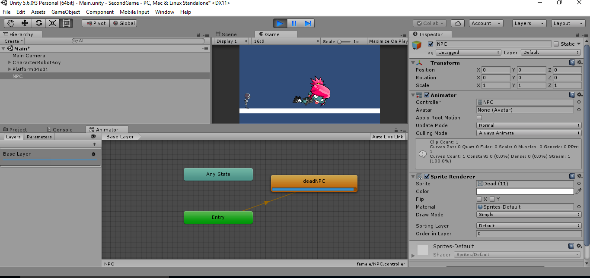Klik pada object NPC, lihat menu tab dan masuk pada Window->Animation.
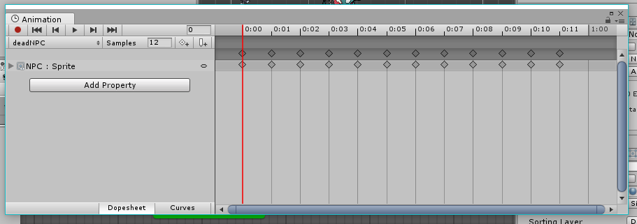Pada Animation Window, terdapat symbol segitiga disamping kiri tulisan “NPC:Sprite”, klik dan lihat pada frame disebelahnya.
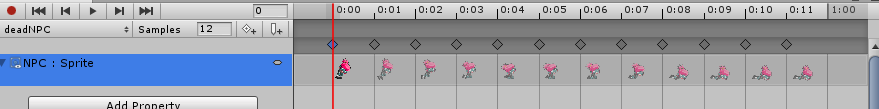Tambahkan Animation baru dengan cara klik pada tulisan deadNPC pada Animation window dan pilih “create New Clip”
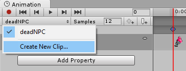Simpan animasi dengan nama “WakeupIdleNPC.anim”
Klik gambar Idle (1) sampai Idle (15) pada project window kedalam frame pada Animation Window.
Ubah nilai samples menjadi 12 agar animasi terlihat lebih lambat. Berikut adalah gambar Animation window pada animasi WakeupIdleNPC.
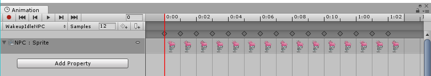Sekarang lihat pada Animator Window, maka state animasi akan bertambah satu.
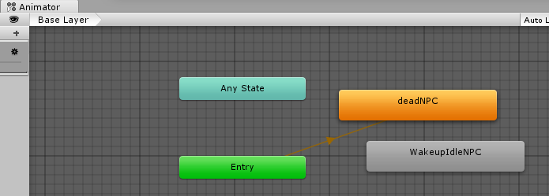Sekarang kita akan membuat transisi state dari “deadNPC” ke “WakeupIdleNPC” dengan cara Klik pada state “deadNPC”, klik kanan-> Make Transition.
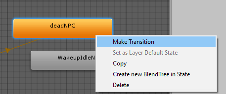Hubungkan panah transisi pada state WakeupIdleNPC. (Jika Animation Window menggangu, close saja)
Buat state transisi dari WakeupIdleNPC ke deadNPC dengan cara seperti langkah 17 dan 18. Berikut gambaran FSM sederhana dari NPC yang sudah jadi. (Abaikan state “Any state”)
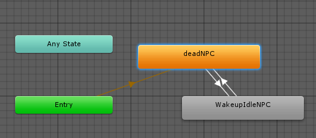Untuk membuat event, kita harus membuat parameter transisi dari deadNPC ke WakeupIdleNPC dan WakeupIdleNPC ke deadNPC.
Klik parameter tab pada Animator Window. Buat parameter baru dengan men-klik symbol “+”. Pilih tipe parameter Bool.
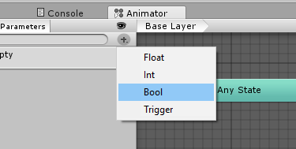Berikan nama parameter “IsDekat”.
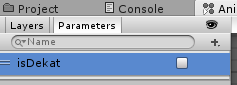Klik pada panah transisi deadNPC ke WakeupIdleNPC, dan lihat pada Inspector.
Uncheck atau jangan centang Has Exit Time karena nanti akan diatur dengan script.
Masuk pada Condition, tambahkan “isDekat” dengan nilai true.
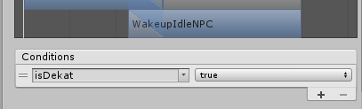Klik pada panah transisi WakeupIdleNPC ke deadNPC, dan lihat pada Inpector.
Masuk pada Condition, tambahkan “isDekat” dengan nilai true. (biarkan Has Exit Time tetap di centang)
Tambahkan script baru pada game object NPC dengan nama NPCState, dengan isi sebagai berikut:
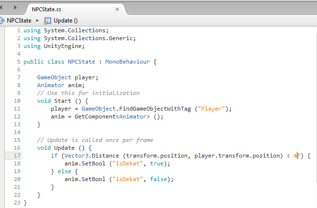
- GameObject.FindGameObjectWithTag (“Player”) -> melakukan instance objek secara langsung dengan menggunakan tag. (pada robotboy secara default sudah memiliki tag dengan nama Player)
- anim = GetComponent
() -> mengambil referensi animator pada inspector object yang berhubungan dengan script ini. - Vector3.Distance(obj1,obj2) -> menghitung jarak antara objek 1 dengan object 2. Disini objek 1 merupakan game object yang berhubungan dengan script ini, dan objek 2 adalah game object player.
- anim.SetBool(“isDekat”, true) -> men-assign nilai yang didefinisikan di parameter tab pada Animator window.
- Jalankan Unity, kendalikan player supaya mendekati NPC dan lihat apa yang terjadi pada NPC.
KUMPULKAN:
Screenshoot game tab dan dekatkan player dengan NPC. Simpan dengan nama sc_07_01.jpg
Camera Follow 2D
Pada saat game Robotboy dimainkan, objek Robotboy terkadang menghilang pada scene game. Hal itu disebabkan oleh tidak adanya camera yang mengikuti objek robotboy itu. Maka dari itu, terdapat praktikum tambahan untuk membuat camera atau Main Camera selalu mengikuti obje player atau Robotboy.
PRAKTIKUM:
- Buat scipt baru pada objek Main Camera dengan nama CameraFollowPlayer.
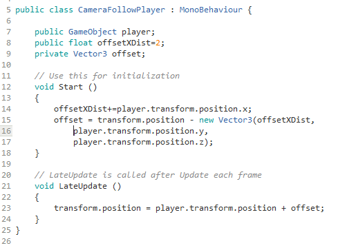
- offsetXDist -> merupakan variabel jarak offs et player x terhadap camera.
- Offset -> merupakan variabel jarak offset untuk menghitung selisih x,y,z dari came ra dan player.
- LateUpdate -> merupakan fungsi built-in pada Unity, daripada menggunakan Update akan lebih baik jika menggunakan LateUpdate karena memperbaharui posisi dilakukan setelah setiap frame diperbaharui waktunya.
Klik CharacterRobotBoy pada hierarchy window dan seret pada property Player di Inspector Camera Follow Script objek Main Camera.
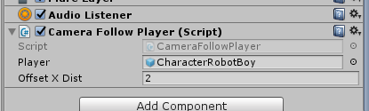Jalankan Unity dan lihat game tab.
KUMPULKAN:
Screenshoot game tab. Simpan dengan nama sc_07_02.jpg Latihan (Opsional) Jika sudah selesai praktikum, silahkan kembangkan game yang ada pada praktikum kali ini dengan pengetahuan yang sebelumnya sudah dipelajari dan kreativitas kamu.
Latihan (Opsional)
Jika sudah selesai praktikum, silahkan kembangkan game yang ada pada praktikum kali ini dengan pengetahuan yang sebelumnya sudah dipelajari dan kreativitas kamu.
REFERENSI
- https://docs.unity3d.com/Manual/HOWTO-InstallStandardAssets.html
- https://gamedevelopment.tutsplus.com/tutorials/finite-state-machines-theory-and-implementation–gamedev-11867
- http://www.cse.lehigh.edu/~munoz/CSE497/classes/FSM_In_Games.ppt
- https://unity3d.com/learn/tutorials/projects/2d-ufo-tutorial/following-player-camera
- https://docs.unity3d.com/Manual/StateMachineBasics.html
- https://docs.unity3d.com/Manual/AnimationParameters.html
Mekanisme Pengumpulan Praktikum Mingguan
Untuk setiap mahasiswa: Buat 1 folder beri nama NIM lengkap. Masukkan file screenshot sc_07_01.jpg, dan sc_07_02.jpg serta
Contoh: A11200904997.rar
Untuk Ketua Kelas: SIapkan folder dengan nama Kode Kelas “_07” yang berisi kumpulan praktikum setiap mahasiswa. Lalu buat rar atau zip dan kirimkan ke email dosen.
Contoh: A114401_07.rar